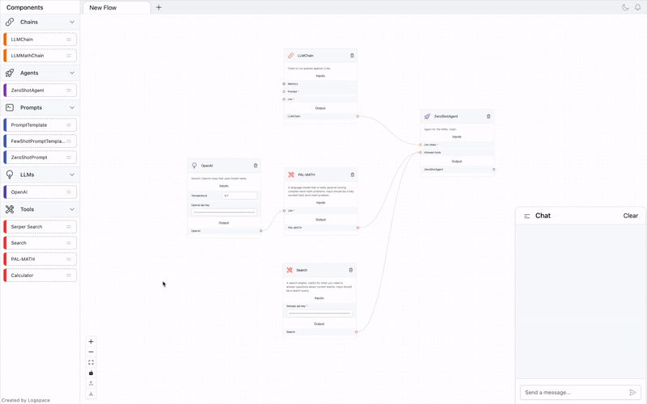
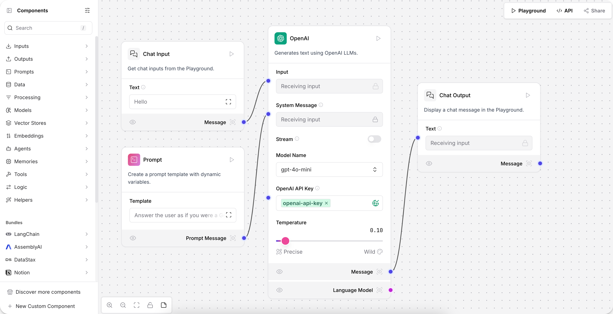
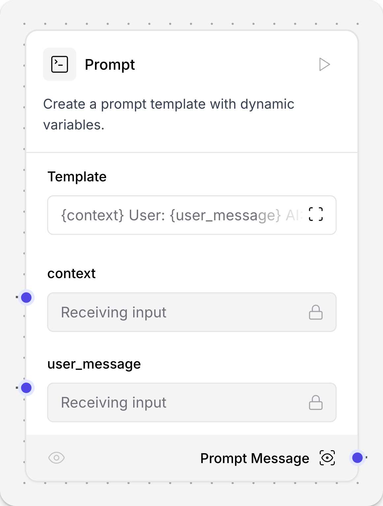
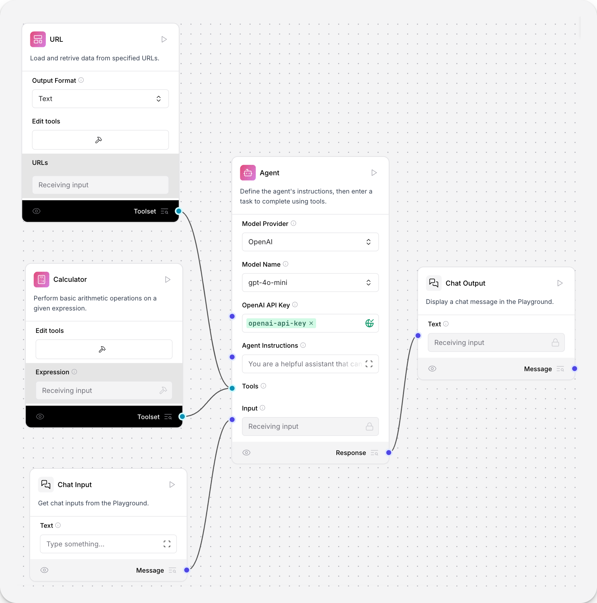
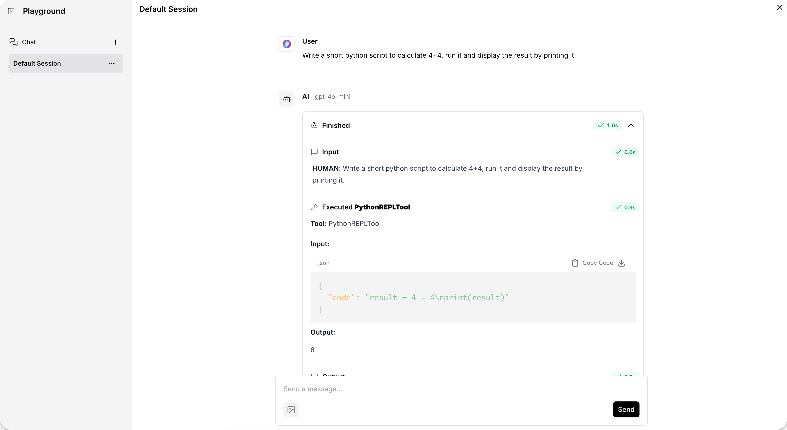

🖥️ Tema 8: Langflow
🌟 Introducción
En este tema, exploraremos Langflow, una herramienta de bajo código diseñada para facilitar la creación de agentes de inteligencia artificial y flujos de trabajo complejos.
Langflow permite a los desarrolladores integrar modelos de lenguaje, APIs y bases de datos de manera intuitiva, acelerando el desarrollo de aplicaciones basadas en IA.

🔎 ¿Qué es Langflow?
Langflow es una plataforma que ofrece una interfaz gráfica para construir aplicaciones de IA mediante componentes reutilizables.
Cada componente representa una unidad funcional, como:
✅ Un modelo de lenguaje
✅ Una fuente de datos
✅ Una herramienta externa
Estos componentes se pueden conectar entre sí para formar flujos de trabajo completos.
Ejemplo de uso
Un usuario puede arrastrar un modelo GPT, conectarlo con una base de datos y definir reglas para responder preguntas con información actualizada.
🛠️ ¿Cómo se utiliza Langflow?
Para utilizar Langflow, sigue estos pasos:
1️⃣ Creación de Flujos 🏗️
- Arrastra y suelta componentes desde la barra lateral al espacio de trabajo.
- Construye el flujo visualmente.

2️⃣ Configuración de Componentes ⚙️
- Haz clic en un componente para modificar su configuración.
- Puedes ajustar los parámetros y ver el código Python subyacente.

3️⃣ Conexión de Componentes 🔗
- Une los componentes para definir el flujo de datos.
- Determina el orden y la lógica del procesamiento.

4️⃣ Ejecución del Flujo ▶️
- Ejecuta el flujo desde la interfaz y observa los resultados en tiempo real.

Nota
Langflow permite exportar el código generado para su uso en otros entornos.
🎯 ¿Para qué sirve Langflow?
Langflow es útil para:
- 🚀 Prototipado rápido – Crear y probar flujos de trabajo de IA sin escribir código desde cero.
- 👀 Visualización de flujos – Representar gráficamente la lógica de la aplicación para facilitar su comprensión.
- 🔌 Integración sencilla – Incorporar modelos de lenguaje, APIs y bases de datos en una plataforma única.
Consejo
Langflow es ideal para desarrolladores y no programadores que desean experimentar con IA de forma visual.
🔗 Integración de Langflow con LangGraph
Langflow se integra perfectamente con LangGraph, una herramienta que permite construir flujos de trabajo complejos mediante programación.
💡 ¿Cómo trabajan juntos?
| Función | Langflow 🖥️ | LangGraph 🧩 |
|---|---|---|
| Diseño Visual 🎨 | ✅ Sí | ❌ No |
| Automatización ⚙️ | ✅ Limitada | ✅ Avanzada |
| Ejecución en Producción 🚀 | 🔶 No recomendado | ✅ Sí |
| Control de Flujo 🔄 | 🟡 Básico | ✅ Completo |
🔹 Casos de uso combinados:
✅ Diseñar agentes en Langflow y luego exportarlos para ejecutarlos con LangGraph.
✅ Probar flujos visualmente antes de escribir código en LangGraph.
✅ Monitorear el comportamiento de un grafo mediante una interfaz gráfica.
Nota
Si quieres desplegar una aplicación con flujos de IA robustos, combinar Langflow y LangGraph es una excelente opción.
📚 Recursos Adicionales
📖 Documentación Oficial de Langflow
🔗 Langflow Docs
📖 Comparativa entre LangGraph, LangChain, LangFlow y LangSmith
🔗 Medium: LangGraph vs LangChain
🎓 ¡Has Completado el Curso 3!
🎉 ¡Felicidades! Has finalizado el tercer curso de LangGraph, donde exploramos la memoria a largo plazo, el almacenamiento de datos con Store, el uso de LangGraph CLI, la conexión con nuestro grafo mediante la SDK de Python y el poderoso LangFlow.
🚀 Ahora dominas herramientas clave para construir y desplegar grafos inteligentes de alto nivel.
🏆 ¿Has Completado Todo el Curso de LangGraph?
🥳 ¡Enhorabuena! Con esto, concluyes el curso completo de LangGraph, donde pasaste de principiante a experto en la creación de grafos inteligentes.
Ahora tienes las habilidades necesarias para desarrollar un asistente virtual avanzado que:
✅ Gestiona múltiples consultas con LLMs.
✅ Mantiene memoria y contexto de conversaciones previas.
✅ Ejecuta tareas en paralelo y maneja flujos complejos.
✅ Se despliega y escala en entornos de producción.
✅ Aprovecha herramientas clave del ecosistema LangChain, como LangStudio, LangSmith y LangGraph CLI.
💡 ¡Misión Cumplida!
Has recorrido un camino increíble, aprendiendo desde los fundamentos hasta técnicas avanzadas.
Ahora es el momento de poner en práctica todo lo aprendido y construir proyectos reales.
🤔 ¿Y Ahora Qué?
Aunque este curso ha llegado a su fin, esto no es el final del camino.
📌 Próximamente, en el Curso 4, exploraremos técnicas aún más avanzadas y profundizaremos en aspectos que no pudimos cubrir completamente en este curso.
🔜 ¡Vuelve pronto para descubrir las novedades!
📣 ¡Comparte tu experiencia!
Si este curso te ha sido útil, no dudes en compartirlo con otros y ayudar a que más personas descubran LangGraph.
💖 ¿Quieres apoyar el curso?
Si quieres contribuir al desarrollo de más contenido gratuito, pronto habilitaré opciones para donaciones.
¡Tu apoyo me ayuda a seguir creando más cursos y recursos! 🚀
💡 ¡Gracias por formar parte de este curso y mucho éxito en tus proyectos con LangGraph! 🎯✨